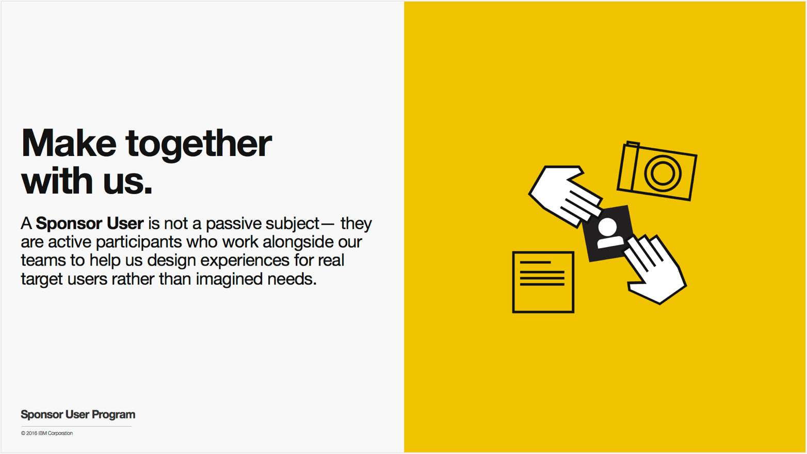
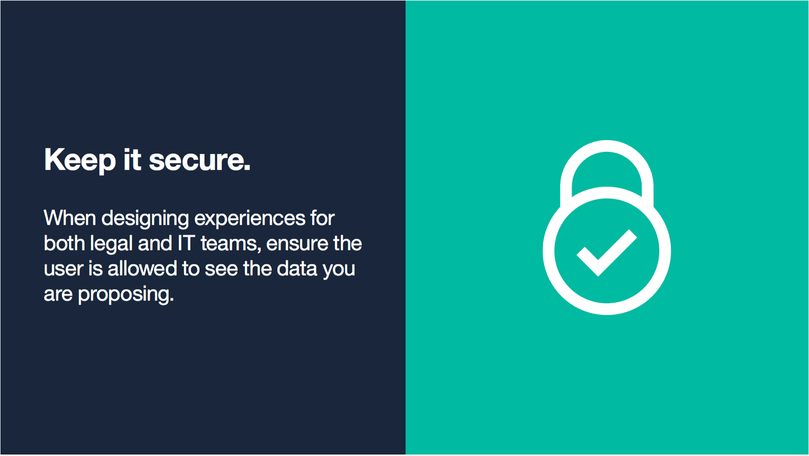
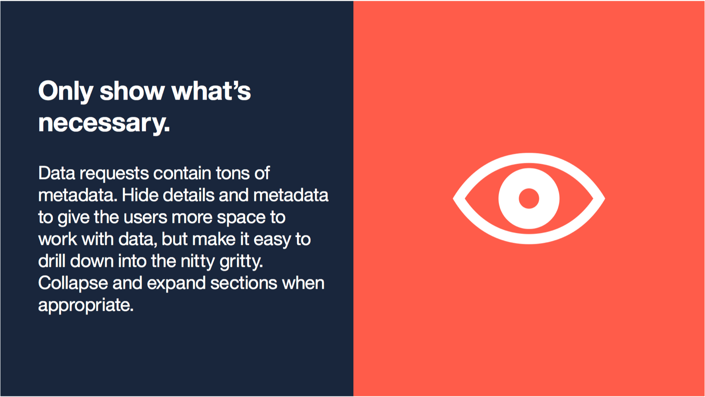
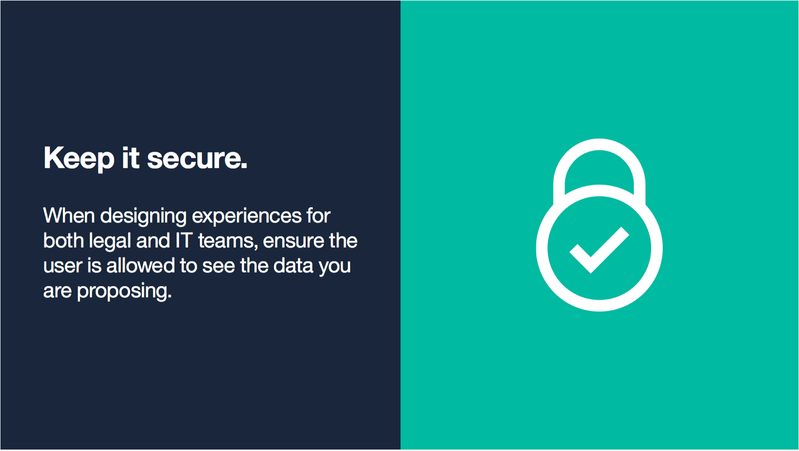
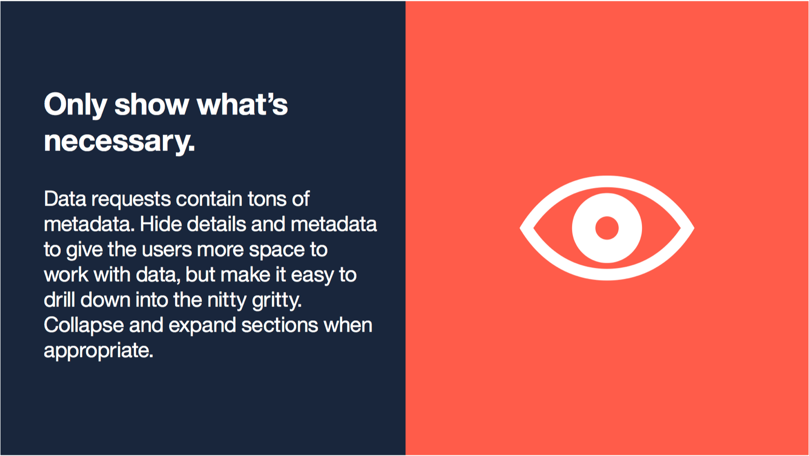

IBM StoredIQ for Legal
Fall 2015 - Summer 2016
The Project
Introduction
In November 2015, I joined the IBM Analytics Platform team to help build IBM StoredIQ for Legal, an electronic discovery tool designed to help legal staff and IT departments manage legal matters and respond to litigation.
Discovery & Governance 101
Modern Fortune 500 companies produce an unfathomable amount of information every single day: everything from HR records and financial statements to cat GIFs posted to Slack. Consider the most common form of electronic data created by organizations: email. An average employee at a large company like IBM sends and receives around 50 emails on a normal work day. After just one year of service, this employee would have racked up 13,000 emails. This means that every year a company like IBM sends and receives about 5 billion emails! Storing this data, either on premise or in the cloud is one of the largest expenses most fortune 500 companies face.
While retaining this data is costly, when companies are involved in a lawsuit they must be able to produce evidence when requested. In fact, most industries require that companies retain data for a certain amount of time, regardless of the size.
The focus of StoredIQ for Legal is to give paralegals, attorneys and IT staff the tools they need to discover and produce relevant information when they are facing impending litigation or an internal investigation.
My Role
I joined the team immediately after the second release launched and was able to participate in the kickoff planning workshop for the third release. As this was my first time working on an IBM release from initial research to the delivery of a final product, I was incredibly excited and nervous to learn all about the nitty gritty details involved in shipping something at this scale. It was really helpful to have an insanely talented group of collaborators to lean on and grow with throughout this release.
Leadership:
- Irina Simpson - Senior Product Manager
- Masato Nuguchi - Senior Technical Staff Member
- Thomas Hampp - Software Architect
- Rose Newton - Design Team Scout Master
- Vickie Culbertson - Design Team Project Manager
- Shelby Aranyi - Design Team Lead
Team members:
- Derrick Ligon - Lead Visual Designer
- Noelle Hoffman - Visual Designer
- Chengqi Zhu - Prototyper
- Amanda McMicken - Visual Designer
- Meghan Corbett - Design Researcher
- Lincoln Neiger - Design Researcher
Product Scope and Competitive Landscape
There are many facets to eDiscovery, but our product is only targetted at a certain aspect of the process. The EDRM model shown below is an industry standard way of looking at the entire eDiscovery lifecycle. Our product is only focused on the first half of the model, while other competiting products handle the second half. The focus of StoredIQ for Legal is to give paralegals, attorneys and IT staff the tools they need to discover, preserve and collect relevant data when they are facing impending litigation or an internal investigation. Other companies provide tools that help legal teams process, review, analyze, produce and present this data.

The Challenge
Previous releases of StoredIQ for Legal had made huge strides towards rethinking IBM’s existing portfolio of legal tools into a single, modern product that addresses many aspects of the electronic discovery process. These tools were clunky and not up to the challenge of assisting legal teams in the age of big data. The product itself began as an experiment in a pilot program within IBM Design and was the result of a human-centered redesign of the entire governance portfolio.

When I joined the team, the product was mostly focused around helping eDiscovery paralegals organize their legal matters, understand which employees or custodians within their company may have data that’s involved in a matter and notify these custodians that they are legally obligated to not destroy the data in their possession.


In addition to ensuring that employees retain data from their own devices, another important part of the discovery process involves coordinating with the IT teams who manage large data sources or repositories within a company. Legal staff must be able to identify, preserve and collect data wherever it exists in a company, and this was a weakness with the previous iteration of StoredIQ for Legal.
Before this release, the only data sources that a paralegal could identify, preserve and collect data from were servers indexed by another IBM tool called StoredIQ. However, companies are legally responsible for governing and producing data wherever it’s stored, not just in places conveniently indexed by StoredIQ. For the third release of the product, I was tasked with designing an experience that improved the data request process. Specifically, we needed to allow paralegals to gather evidence from any place data may be stored, both physically and digitally.


Although we had a hunch on how teams worked together to identify, preserve and collect data from data sources not indexed by StoredIQ, we weren’t confident about how they work together. So to help answer our questions and validate our assumptions, we asked our users.
Research
Engaging with real users
One of the things that drew me to IBM Design was its commitment to understand and empathize with real human users. Instead of defining success by sales metrics or technical features, IBM Design strives to keep our users as the North Star that guides our product design practice. To help us stay focused on solving human needs and incorporating feedback from real people, we regularly work with several teams of sponsor users from all around the world.
While most of our sponsor users come from fortune 500 companies, they all operate in wildly different industries and jurisdictions. For example, we often collaborate with legal teams from Japanese car companies, German banks, multi-national insurance companies and American health food retailers. During this project, we worked with two sponsor users from the financial services and the automobile industries.

Site visit
Early in the design process of StoredIQ for Legal, I got to participate in a contextual inquiry and co-design session with one of these groups of sponsor users. For this visit, I went on site with two design researchers and a visual designer to the North American headquarters of a major automobile company based in Los Angeles. Our goal was to understand how paralegals and attorneys collaborate with IT staff to identify, preserve and collect evidence. During the visit, I got to observe our users conduct their day to day business using a legacy version of our software. I listened to them describe their processes for handling data relevant to legal matters and how difficult it is to ensure that requested information is complete and defensible. In the first half of the day, we focused on the paralegal experience. After interviewing a few paralegals, we had them create an as-is journey map to illustrate their workflow.
Next, we co-designed some very low-fidelity paper prototypes of solutions to some of the problems they were describing. We asked them to imagine a world where they had access to all the information they needed to get their job done and to organize it in a paper dashboard.

In the afternoon, we shifted our focus away from the paralegals and towards the IT teams that help fulfill requests. Our design researchers led a contextual inquiry where we examined a day in the life of fulfillment teams. We observed how they used a mix of legacy software, handwritten instruction manuals, email and phone calls to collaborate with legal teams.
Modeling an eDiscovery User Ecosystem
After returning to Austin, I worked with our research team to synthesize our findings. Based on our observations, we developed a user ecosystem model. eDiscovery teams have many players who often occupy different roles at different times. Additionally, different companies use different names for different roles as there isn’t yet an industry standard. However, by grouping users who are assigned similar tasks, we created several archetype personas and a model for how they all work together to fulfill data requests.
Examining the as-is user journey
Once we established who the key players are in an eDiscovery data request workflow and what each of their goals and tasks were, we synthesized a simplified and generalized as-is journey map to understand each phase of the process and identify pain points.


Identifying pain points
Once the journey was mapped out, we looked for clear points of friction between users. The following two themes stood out clearly and validated our product manager’s assumptions.


As we moved into the production portion of the release, we referenced these pain points and artifacts to ensure that we were focusing on solving the right problems.
Production Process
Crafting Hills
Armed with a solid understanding of the problem at hand, our team began imagining what successfully solving these pain points would look like. At IBM, we use tools called Hills to align our teams around a common vision for what we are building. Hills focus on user enablement and always define who we are solving for, what that person should be able to do and why it’s important. They should directly map to pain points identified during initial research and offer specific solutions to address these pain points. Hills are named that way to reflect the idea of commander’s intent. Similar to how the military uses commander’s intent, Hills at IBM establish a clear goal, but give individual teams the flexibility to achieve that goal in a way that works for them.
Never tell people how to do things. Tell them what to accomplish and they will surprise you with their ingenuity.”
- General George S. Patton
The Hill I worked towards solving began its life during the kickoff workshop as the following:
A legal/IT team can identify, preserve and collect data from a non-StoredIQ data source.
This is pretty vague and doesn’t make for a very clear goal. Who makes up a legal/IT team? How does this benefit anyone? After several iterations, we landed on a workable Hill that looked something like this:
Paralegals and IT data staff can work together to identify, preserve and collect data from a non-StoredIQ data source while the status of the process is visible to the entire team in a unified view.
This updated Hill is more specific and actionable. It directly addresses some of the pain points we discovered during our contextual inquiry and user interviews with our sponsor users. Once we determined what we wanted to build, we prototyped ways of achieving it.
Journey mapping
After drafting our Hill, we began moving forward with designing a potential to-be journey map for each of our personas that addressed the pain points documented in their as-is journey maps. Because we couldn’t design the entire experience in one big chunk of work, we split each of these to-be journey maps into distinct experience phases. This allowed us to focus on designing one small part of that future experience during each of our three week sprints.


Design goals
Establishing a clear set of design and experience goals was helpful in keeping us focused on delivering experiences that directly solved our user’s pain points. These served as a measuring stick against which we could compare our work in progress.

 



Sketching and prototyping
I tried to begin the design process of each of my sprints by sketching and white boarding wildly diverging concepts that accomplished the same goal. In projects I’ve worked on in the past, I have had the tendency to stick with my first concept and take it directly to high fidelity mockups as quick as possible. During this release, I tried my best to resist that temptation and instead shared design concepts at a low fidelity and gained consensus with the rest of the team before moving to higher fidelity. Additionally, I tried to communicate my ideas by using Framer to prototype more complicated interactions instead of annotating static PDFs.

Radical collaboration in the empire on which the sun never sets
One of the most challenging and surprising aspects of working on this project at IBM was that our team was so geographically diverse. No two teams working on the project was co-located together. Every day during the design stage of the sprint, I not only collaborated with our design researchers and visual designers on the team, but also with our product manager in San Jose, back-end developers in Vancouver and Germany and UI developers in Japan. Unfortunately, there was no single hour in the workday that allowed us to all meet together. Each day we were faced with the choice to schedule important meetings either very late at night or early in the morning. Often, we simply couldn’t meet at all. Working in this way was really tough and it caused us to miss achieving our goals during several sprints.
In May, the team realized that something had to give and we needed to meet in person to figure out how to work more quickly. During this “war room”, the design team and I were able to embed with our engineering teams for 2 weeks at the IBM Germany Research and Development center in Boblingen, Germany.
As designers, we talk a lot about how the process of empathizing with our users leads to better outcomes for products. But this project really helped illustrate the value of another mantra that gets repeated often at IBM Design:
Empathy: first with each other. Then with our users.
- IBM Design Thinking Field Guide (2015)
While each group within our team shared the goal of building the best product we can, design, development and product management will always have different, and sometimes conflicting, priorities. As a new designer, it’s easy to feel frustrated when concepts you believe would help address some aspect of the user’s pain are deemed too difficult to implement. And it’s especially frustrating when you are being told this by people you’ve never met.
But meeting these people and working alongside them in person at the war room let me see them for the first time as real three-dimensional people who have equally valid ideas and concerns about the product. It helped me understand the tremendous business pressure facing the product management team and our consulting services division. It also opened my eyes to the fact that the development team only has a certain number of resources. And while they share the desire to deliver incredible experiences for users, they also must think very practically about what we can realistically build.

That war room was instrumental in refocusing our vision for what we wanted to build and helped establish the cadence we would follow for the rest of the release schedule. And while we still had to deal with the late night / early meetings, I felt a real connection to the rest of the team and mutual respect for the unique and valuable perspective that each member of the team contributed during our sprints.
Outcomes and impact
I’m really proud of what our team was able to build together. We improved a process that was painful for both paralegals and IT teams while helping clients save money and limit their legal risk. As a new product designer, this launch was a humbling and eye-opening experience that has hopefully made me a more empathetic and understanding team member. The most rewarding part of shipping this product was evaluating the final designs against our stated experience goals:
Design for self service.
One of the biggest pain points in an eDiscovery team’s workflow is a lack of transparency into work being done by others. Make the status of fulfillment team completion accessible to everyone from Dave to the managing attorney.
Emphasize what needs to be done right now.
In an eDiscovery team, some tasks are more important than others and emergencies need to be dealt with quickly. Let users assign and edit data request priority to influence the distribution of tasks across roles.

Facilitate structured communication.
Try to limit phone calls and email bloat by allowing paralegals and IT to communicate with each other within the app in a legally defensible and open way.
Limit dependence on email and spreadsheets.
Excel was never designed to support a collaborative eDiscovery workflow. Give teams the tools to work with large sets of custodial data and work together to fulfill requests.
Keep it secure.
When designing experiences for both legal and IT teams, ensure the user is allowed to see the data you are proposing. Obfuscate matter names for IT teams if it’s not mission critical.

Only show what’s necessary and support multiple models of working.
Data requests contain tons of metadata. Hide details and metadata to give the users more space to work with data, but make it easy to drill down into the nitty gritty. Collapse and expand sections when appropriate. Sometimes paralegals need fulfillment status about specific custodians. Other times, paralegals are looking for fulfillment request by data source or work package. Allow users to adjust their view depending on their needs.

Evaluative Design Research
While we are still working with our sponsor users to formally evaluate and iterate on what we delivered, one early piece of feedback from a sponsor user has stuck with me:
This is amazing. It's like a rainbow-farting unicorn compared to [old product]
- Anonymous sponsor user